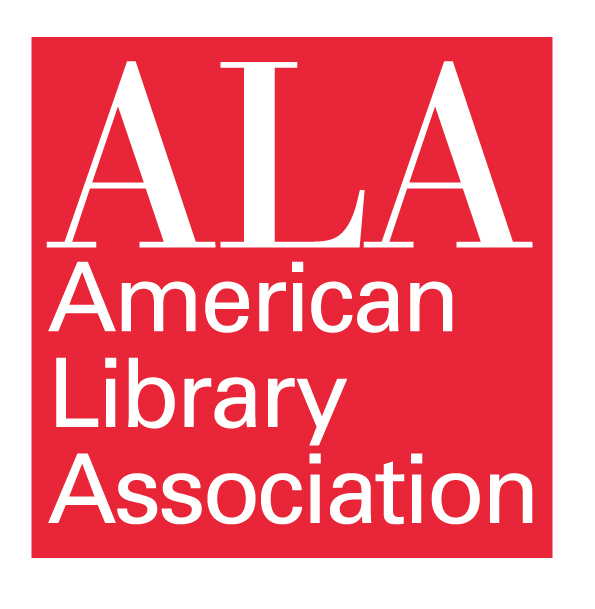
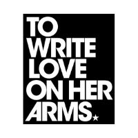

Robyn Cunningham
Reference Librarian by day, Digital Artist by night
Associations
 "The American Library Association is the oldest and largest library association in the world. The mission of ALA is "to provide leadership for the development, promotion and improvement of library and information services and the profession of librarianship in order to enhance learning and ensure access to information for all."
"To Write Love On Her Arms is a non-profit movement dedicated to presenting hope and finding help for people struggling with depression, addiction, self-injury, and suicide. TWLOHA exists to encourage, inform, inspire, and also to invest directly into treatment and recovery."
"The Association of College and Research Libraries develops programs, products, and services to help those working in academic and research libraries learn, innovate, and lead within the academic community. Founded in 1940, ACRL is committed to advancing learning, transforming scholarship, and creating diverse and inclusive communities."
"The Art Libraries Society of North America is a dynamic organization of over 1,000 individuals devoted to fostering excellence in art and design librarianship and image management."